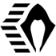

Omen, uma lembrança fantasmagórica, caça nas sombras. Ele cega os inimigos, teleporta-se pelo campo e deixa a paranoia assumir o controle enquanto o adversário tenta descobrir de onde virá seu próximo ataque..
Instantaneamente emite um projétil sombrio adiante, reduzindo brevemente o alcance de visão dos jogadores tocados. O projétil atravessa paredes.
Equipe um mapa tático. Dispare para começar a se teleportar ao local selecionado. Enquanto se teleporta, Omen aparecerá como um Vulto que pode ser destruído por qualquer inimigo para cancelar o teleporte.
Equipe um orbe sombrio e veja o indicador de alcance. Dispare para lançar o orbe no local marcado, criando uma esfera de sombra duradoura que bloqueia a visão. Segure o disparo alternativo enquanto mira para afastar o marcador. Segure a tecla de habilidade enquanto mira para aproximar o marcador.

Equipe uma habilidade de passos sombrios e olhe o indicador de alcance. Dispare para começar uma breve canalização e, então, teleporte-se para o local marcado.